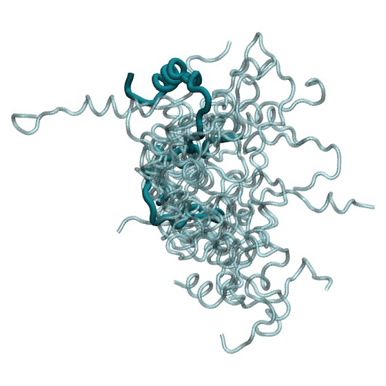

Database
Open data for disordered proteins
Large-scale simulation ensembles and curated experimental data, shared openly for analysis, benchmarking, and machine learning.
HyRes-IDRome
HyRes conformational ensembles for 29,872 disordered proteins and regions from the human proteome and DisProt, with trajectories, radius of gyration, end-to-end distance, secondary structure, and sequence properties for each. Also available as predicted entries in the Protein Ensemble Database (PED 2027).

Fuzzy Coat Atlas
HyRes-sampled fuzzy coats across known amyloid fibril structures, with surface properties, internal interactions, and binding properties of the disordered regions that flank the fibril core.

Experimental reference data
A curated collection of available experimental measurements on disordered proteins, including SAXS, smFRET, and NMR, for calibrating and benchmarking molecular models.